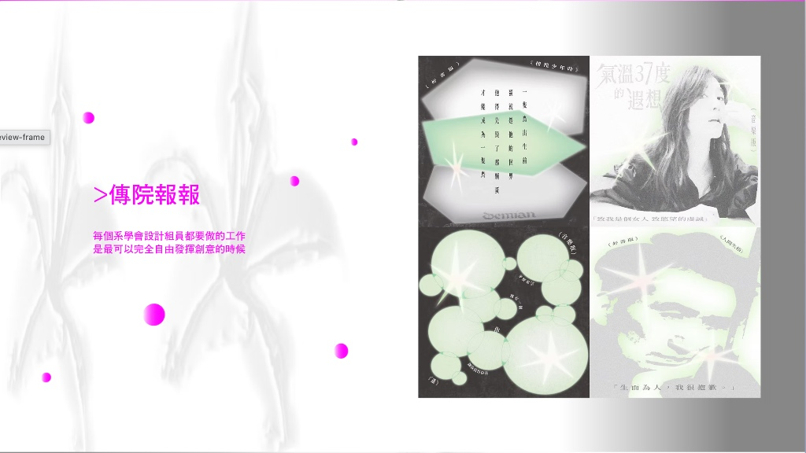
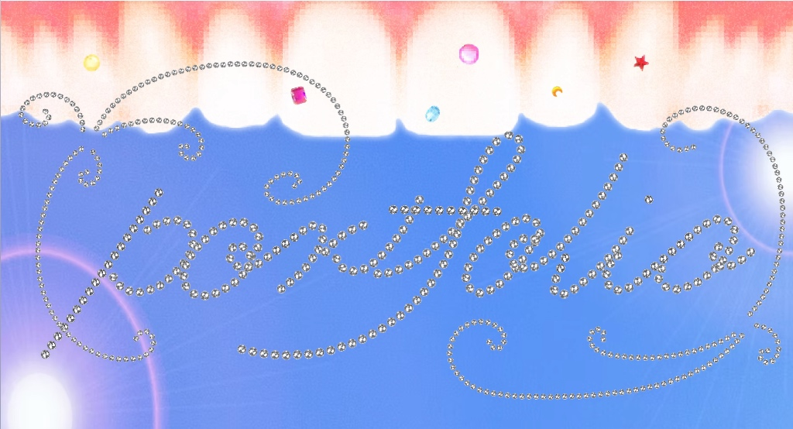
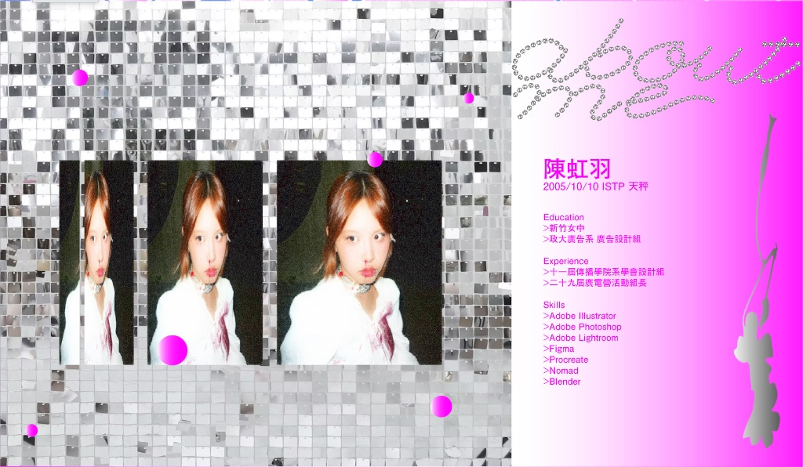
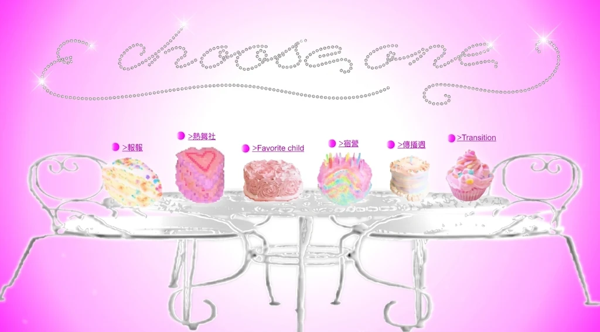
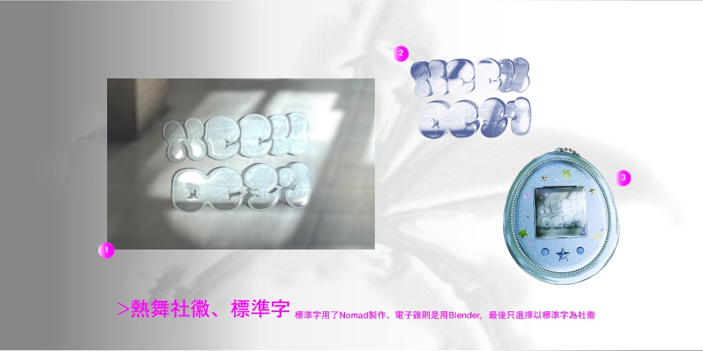
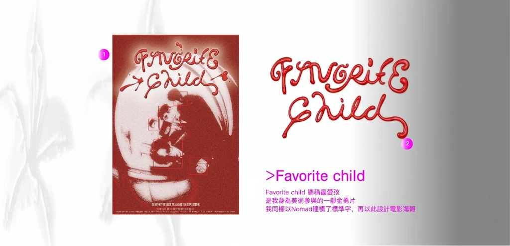
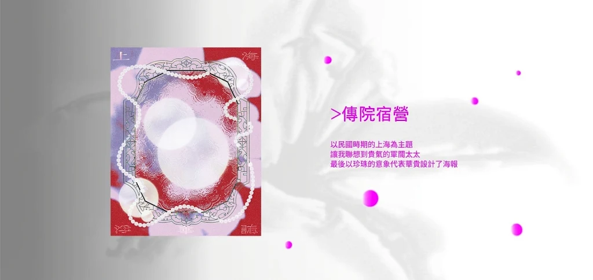
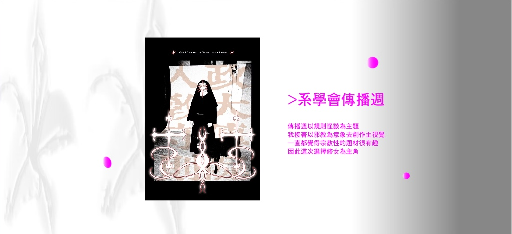
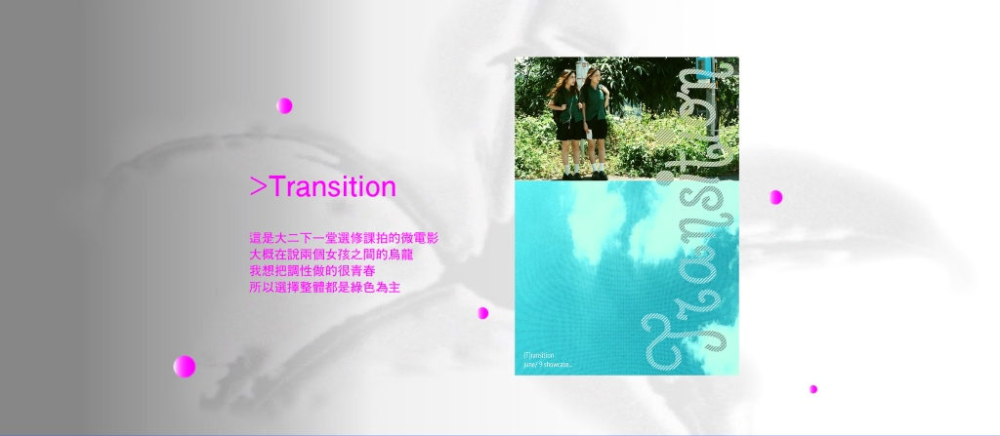

Graphic Design
>傳院報報
每個系學會設計組員都要做的工作，
是最可以完全自由發揮創意的時候。
Tools: Illustrator / Photoshop



點擊下方按鈕快速跳轉至各專案：

每個系學會設計組員都要做的工作，
是最可以完全自由發揮創意的時候。
Tools: Illustrator / Photoshop

標準字用了 Nomad 製作、電子雞則是用 Blender，
最後只選擇以標準字為社徽。
Tools: Nomad / Blender

Favorite child 簡稱最愛孩，
是我身為美術參與的一部金勇片。
我同樣以 Nomad 建模了標準字，再以此設計電影海報。
Tools: Nomad / Photoshop / Illustrator

以民國時期的上海為主題，
讓我發想到貴氣的軍閥太太，
最後以珍珠的意象代表華貴設計了海報。
Tools: Photoshop / Illustrator

傳播週以規則怪談為主題，
我接著以邪教為意象去創作主視覺。
一直都覺得宗教性的題材很有趣，
因此這次選擇修女為主角。
Tools: Photoshop / Illustrator

這是大二下一堂選修課拍的微電影，
大概在說兩個女孩之間的烏龍。
我想把調性做的很青春，
所以選擇整體都是綠色為主。
Tools: Photography / Lightroom / Illustrator